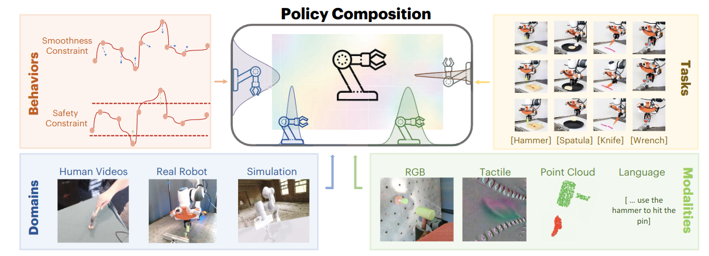

Lirui (Leroy) Wang
I am a Ph.D. student advised by Prof. Russ Tedrake at MIT Computer Science and Artificial Intelligence Laboratory (MIT CSAIL). I also work closely with Prof. Kaiming He. Before coming to MIT, I received my B.S. and M.S. degrees at University of Washington where I was very fortunate to work with Prof. Dieter Fox and collaborate with NVIDIA.
My research interest lies in Robotics and Machine Learning. In particular, I am interested in developing algorithms and systems for robots that can generalize in the complex and unstructured real-world environments. To achieve this, I work on fleet learning that can scale with the heterogeneous robot data.
Email: liruiw [at] mit (dot) edu [Google Scholar] / [Github] / [Twitter] / [LinkedIn]
- Our paper on policy composition (PoCo) from and for heterogeneous robot learning has been accepted to RSS 2024.
- Our paper on code generation for robotic simulation won the outstanding paper award at the Language Robotics (LangRob) workshop CoRL 2023 and is accepted by ICLR 2024 as Spotlight. Checkout the website, demo, GPTs, and code.
- Our paper on fleet learning via policy merging is accepted by ICLR 2024. Checkout the code.
Recent News
Publications
 |
Transferable Tactile Transformers for Representation Learning Across Diverse Sensors and Tasks Jialiang Zhao, Yuxiang Ma, Lirui Wang, Edward H. Adelson on Arxiv, 2024 arxiv, Bibtex , Code, Website |
|  |
PoCo: Policy Composition From and For Heterogeneous Robot Learning Lirui Wang, Jialiang Zhao, Yilun Du, Edward Adelson, Russ Tedrake Robotics: Science and Systems (R:SS), 2024 arxiv, Bibtex, Website, Video |
{kind=link}
 |
Robot Fleet Learning via Policy Merging Lirui Wang, Kaiqing Zhang, Allan Zhou, Max Simchowitz, Russ Tedrake International Conference on Learning Representations (ICLR), 2024 arxiv, Bibtex, Code, Video |
 |
GenSim: Generating Robotic Simulation Tasks via Large Language Models Lirui Wang, Yiyang Ling*, Zhecheng Yuan*, Mohit Shridhar, Chen Bao, Yuzhe Qin, Bailin Wang, Huazhe Xu, Xiaolong Wang Workshop on Language Grounding and Robot Learning (Workshop Best Paper), CoRL 2023 International Conference on Learning Representations (Spotlight) (ICLR), 2024 arXiv, Website, Demo, Code, Dataset, Video, GPTs, Bibtex |
 |
Does Decentralized Learning with non-IID Unlabeled Data Benefit from Self Supervision?
Lirui Wang, Kaiqing Zhang, Yunzhu Li, Yonglong Tian, and Russ Tedrake International Conference on Learning Representations (ICLR), 2023 arXiv, Code, Bibtex, Video |
 |
3D Neural Embedding Likelihood: Probabilistic Inverse Graphics for Robust 6D Pose Estimation Guangyao Zhou*, Nishad Gothoskar*, Lirui Wang, Joshua B. Tenenbaum, Dan Gutfreund, Miguel Lázaro-Gredilla, Dileep George, Vikash K. Mansinghka International Conference on Computer Vision (ICCV), 2023 arXiv, Website, Code, Bibtex |
 |
NeRF in the Palm of Your Hand: Corrective Augmentation for Robotics via Novel-View Synthesis
Allan Zhou*, Moo Jin Kim*, Lirui Wang, Pete Florence, Chelsea Finn The IEEE / CVF Computer Vision and Pattern Recognition Conference (CVPR), 2023 arxiv, Website, Bibtex |
 |
PredictionNet: Real-Time Joint Probabilistic Traffic Prediction for Planning, Control, and Simulation
Alexey Kamenev, Lirui Wang, Ollin Boer Bohan, Ishwar Kulkarni, Bilal Kartal, Artem Molchanov, Stan Birchfield, David Nistér, Nikolai Smolyanskiy International Conference on Robotics and Automation (ICRA), 2022 arXiv, Bibtex, Video, Blog, Poster |
 |
Hierarchical Policies for Cluttered-Scene Grasping with Latent Plans
Lirui Wang, Xiangyun Meng, Yu Xiang, Dieter Fox IEEE Robotics and Automation Letters (RAL), 2022 arXiv, Bibtex, Video, Poster, Website, Code |
 |
Goal-Auxiliary Actor-Critic for 6D Robotic Grasping with Point Clouds
Lirui Wang, Yu Xiang, Wei Yang, Arsalan Mousavian, Dieter Fox The Conference on Robot Learning (CoRL), 2021 arXiv, Bibtex, Video, Poster, Website, Code |
 |
Manipulation Trajectory Optimization with Online Grasp Synthesis and Selection Lirui Wang, Yu Xiang, Dieter Fox Robotics: Science and Systems (R:SS), 2020 arXiv, Bibtex, Video, Website, Code |
-
2021.9 - present, Massachusetts Institute of Technology
Ph.D. student in AI and Decision Making -
2020.6 - 2021.3, University of Washington
Master of Science in Computer Science -
2016.9 - 2020.6, University of Washington (Summa Cum Laude)
Bachelor of Science in Computer Science
Bachelor of Science in Electrical Engineering
Minor in Mathematics
Education
- MIT EECS Fellowship (Xianhong Wu Fellow), MIT, 2021
- Bob Herbold Data Science Fellowship, UW, 2021
- Patricia Lynch and Theodora & Eugene Russell Memorial Scholarship, UW, 2020
- Lawrence & Lucille Frey Endowed Scholarship, UW, 2019
- Tau Beta Pi Scholarship, UW, 2018
Selected Honors
- TA, 6.4210 Robotic Manipulation (MIT, Fall 2022)
- TA, CSE 455 Computer Vision (UW, Winter 2021)
- TA, CSE 543 Deep Learning (UW, Fall 2020)
- TA, CSE 473 Artificial Intelligence (UW, Winter 2020)
- TA, CSE 455 Computer Vision (UW, Fall 2019)
Teaching
-
Model-based reinforcement learning for behavior prediction
Nikolai Smolyanskiy, Alexey Kamenev, Lirui Wang, David Nister, Ollin Boer Bohan, Ishwar Kulkarni, Fangkai Yang, Julia Ng, Alperen Degirmenci, Ruchi Bhargava, Rotem Aviv
US Patent App. 17/453,055, 2022
Patent
Misc Projects
 |
Pose Tracking UW |
 |
Server Mover Microsoft |
 |
Auto Cooperation DJI |